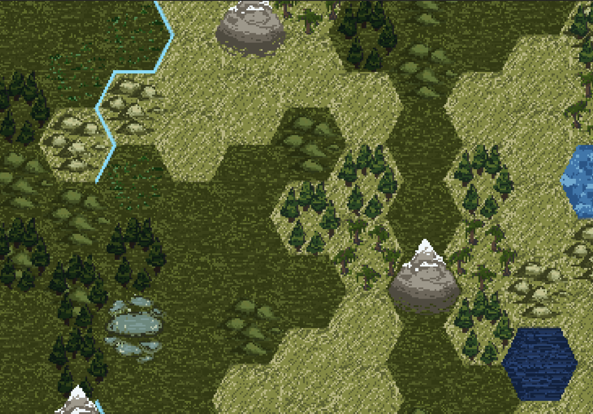
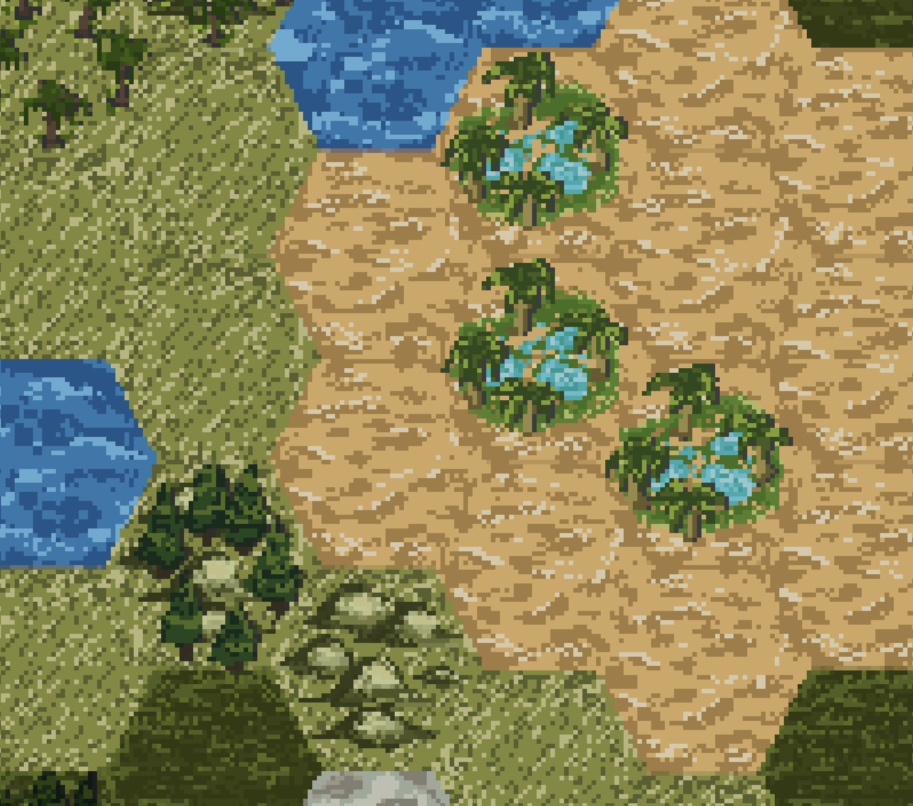
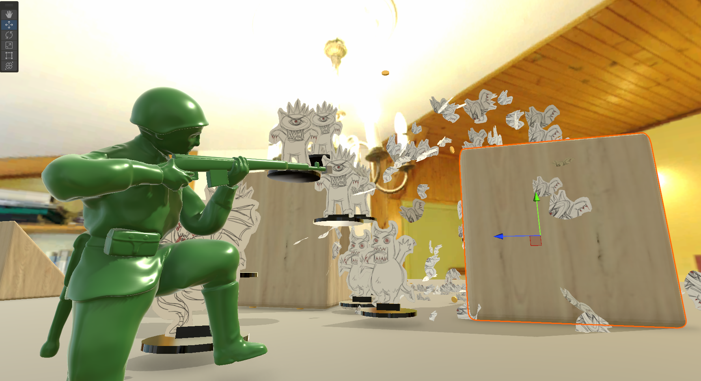
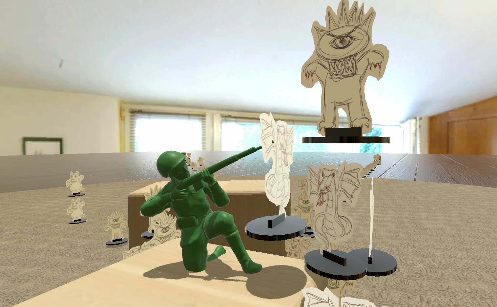
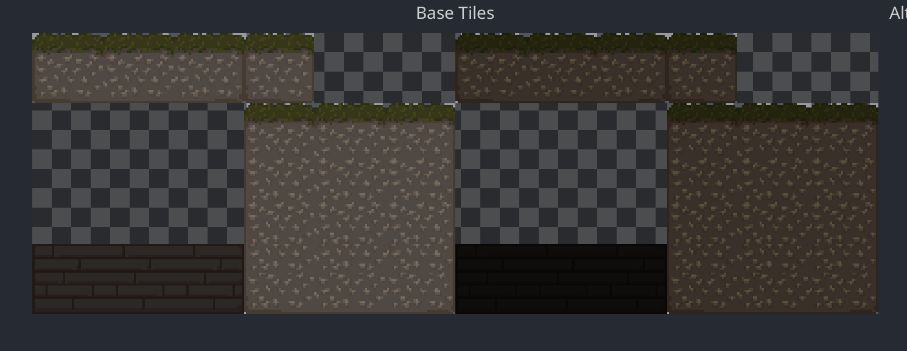
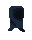

Projects:
-
4X Strategy Game (In development, 2024-2025)
 Led a team to create cohesive, appealing and visually readable pixel art alongside two other artists
Made decisions about art direction based on the genre and theme of the game
-
Army Man Game (GDAC Game Jam, 2024)
 Created 2D Art (Game pieces)
-
Hook Hero (Unfinished, 2024)

Created lighting effects in Godot 4
Created a working tilesheet in Godot 4
Created a walking animation for the player character
-
Stray Stars (2023)
Worked on frontend/UI menu programming